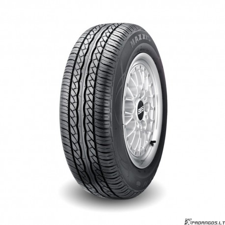

Welcome to automobilių-padangos
Automobilių padangos
2020.10.28 09:17Interneto svetainės dizainui ir efektyvumui optimizuoti naudojame slapukus. Toliau naršydami šioje svetainėje jūs sutinkate su slapukų naudojimu. Sužinokite daugiau apie slapukus ir jų naudojimą.
Accept Decline Padangos Vasarinės padangos Universaliosios padangos Žieminės padangos Naršyti visas padangas Sužinokite Patarimai įsigyjant padangas ES padangų etiketė Sezoninės padangos Supratimas apie padangas Atsarginės padangos Padangų žodynas Padangų priežiūra Padangų taisymas ir keitimas Kodėl „Dunlop“? Technologijos bei inovacijos Kokybės kriterijai Mūsų patirtis Kas mes esame Originali įranga Išbandyk savo galimybes „Porsche“ galia vainikuota nepaprastu sukibimu Mes ne važiuojame: mes ypač gerai važiuojame (UHP) Raskite platintoją Car Motocrycle Truck Industrial Change country Kitos Dunlop svetainėsChange country
België Belgique България Česká republika Danmark Deutschland Eesti España Ελλάδα France Hrvatska Ireland Italia Latvija Lietuva Luxembourg Magyarország Nederland Norge Österreich Polska Portugal România Schweiz Suisse Svizzera Slovenija Slovensko Srbija Suomi Sverige United KingdomKitos Dunlop svetainės
Kitoms transporto priemonėms
Sunkvežimiai ir autobusai OTR padangosVisi prekių ženklai
Goodyear Sava FuldaPadangos verslui
MyWay Bendrovės svetainėAutomobilių padangos
Jų protektorius dėvisi iš lėto, padangos ilgai išlaiko puikią trauką bei kitas eksploatacines savybes.
Žiūrėti visas padangų kategorijas
Vasarinės padangos
Vasarinės padangos yra sukurtos švelnioms oro sąlygoms. Eksploatacinės savybės ima prastėti temperatūrai nukritus žemiau 7 °C.
Paskirtis: užtikrinti puikias eksploatacines savybes tiek esant šlapiai, tiek sausai kelio dangai. Kada verta rinktis: jeigu mėgstate vairuoti preciziškai ir gyvenate vietoje, kurioje dažniausiai būna šilta. Neapsigaukite dėl pavadinimo – vasarinės padangos pasižymi išties puikia trauka ant šlapios kelio dangos. Tik nepamirškite pakeisti šių padangų žieminėmis, jeigu prireiktų važiuoti per ledą ir sniegą.Daugiau apie vasarines padangas
Universaliosios padangos
Kaip rodo pats pavadinimas, universaliosios padangos yra alternatyvus variantas eksploatuoti jas ištisus metus.
Paskirtis: susidoroti su kintančiomis oro sąlygomis, tokiomis kaip lietus, šlapdriba, patižęs arba normalus sniegas. Kada verta rinktis: jeigu gyvenate vietoje, kurioje oro sąlygos dažnai keičiasi. Tačiau jeigu žinote, kad turėsite dažnai važinėti apsnigtais ir apledėjusiais keliais, šaltesniais mėnesiais patartina naudoti žiemines padangas.Kaip rodo pats pavadinimas, universaliosios padangos yra alternatyvus variantas eksploatuoti jas ištisus metus.
Žieminės padangos
Optimizuotos šalto oro sąlygoms, kai temperatūra yra 7 °C arba žemesnė. Žieminių padangų protektoriai yra sukurti taip, kad sukibimas ir stabdymo jėga ant apledėjusios ir apsnigtos kelio dangos būtų kuo didesni.
Paskirtis: užtikrinti geresnį sukibimą su kelio danga netgi pačiomis sudėtingiausiomis žiemos sąlygomis, tokiomis kaip patižęs ir normalus sniegas, lijundra ir ledas. Kada verta rinktis: jeigu gyvenate vietoje, kurioje dažnai būna sniego ir ledo. Tačiau žieminės padangos nėra pritaikytos visiems sezonams. Orui atšilus, jas reikėtų pakeisti vasarinėmis arba universaliosiomis padangomis.Daugiau apie žiemines padangas
Žiūrėti sezoninių padangų vadovąSezonai
Žiema Universaliosios Vasarinės Filtruoti padangas VasarinėsSport Maxx Race 2
Sausiems keliams skirta aukščiausios kokybės sportinių automobilių padanga
Taip pat galima įsigyti
Ratlankio apsaugos priemonėNe kiekviena padanga tiks jūsų transporto priemonei. Leiskite padėti jums surasti tinkamas padangas.
Rasti padangasarba
Padangų duomenys Vasarinės„Sport Maxx Race“
Išskirtinis sukibimas ant sausos dangos tiek lenktynių trasoje, tiek paprastame kelyje
Taip pat galima įsigyti
Ratlankio apsaugos priemonėNe kiekviena padanga tiks jūsų transporto priemonei. Leiskite padėti jums surasti tinkamas padangas.
Rasti padangasarba
Padangų duomenys Vasarinės„Sport BluResponse“
VISIŠKAS SUKIBIMAS. JOKIŲ KOMPROMISŲ
Taip pat galima įsigyti
Ratlankio apsaugos priemonėNe kiekviena padanga tiks jūsų transporto priemonei. Leiskite padėti jums surasti tinkamas padangas.
Rasti padangasarba
Padangų duomenys VasarinėsStreetResponse 2
Enhanced wet and dry performance for city cars
Ne kiekviena padanga tiks jūsų transporto priemonei. Leiskite padėti jums surasti tinkamas padangas.
Rasti padangasarba
Padangų duomenys VasarinėsSP Sport FastResponse
Puikus ryšys su keliu siekiant tikslaus valdymo važiuojant tiek šlapiais, tiek sausais keliais
Taip pat galima įsigyti
Ratlankio apsaugos priemonė „Run on flat“Ne kiekviena padanga tiks jūsų transporto priemonei. Leiskite padėti jums surasti tinkamas padangas.
Rasti padangasarba
Padangų duomenys Vasarinės„SP Sport Maxx TT“
Tikslus valdymas, kurį suteikia „DuPont™ Kevlar®“ technologija. Skirta galingiems sportiniams automobiliams.
Taip pat galima įsigyti
Ratlankio apsaugos priemonė „Run on flat“Ne kiekviena padanga tiks jūsų transporto priemonei. Leiskite padėti jums surasti tinkamas padangas.
Rasti padangasarba
Padangų duomenys VasarinėsSP Sport 01A
A multi-talented tyre for mid class and luxury vehicles
Taip pat galima įsigyti
Ratlankio apsaugos priemonė „Run on flat“Ne kiekviena padanga tiks jūsų transporto priemonei. Leiskite padėti jums surasti tinkamas padangas.
Rasti padangasarba
Padangų duomenys Vasarinės„SP Sport Maxx GT 600“
Išskirtinis sukibimas ir valdymas didelės galios sportiniams automobiliams
Taip pat galima įsigyti
Ratlankio apsaugos priemonė „Run on flat“Ne kiekviena padanga tiks jūsų transporto priemonei. Leiskite padėti jums surasti tinkamas padangas.
Rasti padangasarba
Padangų duomenys VasarinėsSport Maxx RT 2
Sukibimo ir vairavimo tikslumo čempionė
Taip pat galima įsigyti
Ratlankio apsaugos priemonė „Run on flat“ NoiseShieldNe kiekviena padanga tiks jūsų transporto priemonei. Leiskite padėti jums surasti tinkamas padangas.
Rasti padangasarba
Padangų duomenys Vasarinės„SP Sport Maxx GT“
Išskirtinis sukibimas ant sausos danga ir informatyvumas, skirtas sportiniam važiavimui
Taip pat galima įsigyti
Ratlankio apsaugos priemonė „Run on flat“ NoiseShieldNe kiekviena padanga tiks jūsų transporto priemonei. Leiskite padėti jums surasti tinkamas padangas.
Rasti padangasarba
Padangų duomenys Vasarinės„Sport Maxx RT“
Lenktyninių padangų sukibimas ir stabdymo savybės bei dinamiškas vairavimas
Taip pat galima įsigyti
Ratlankio apsaugos priemonė „Run on flat“ NoiseShieldNe kiekviena padanga tiks jūsų transporto priemonei. Leiskite padėti jums surasti tinkamas padangas.
Rasti padangasarba
Padangų duomenys Vasarinės„SP Sport Maxx“
Didžiausias sukibimas ir valdymas, didžiausias važiavimo malonumas. Skirta galingiems sportiniams automobiliams.
Taip pat galima įsigyti
Ratlankio apsaugos priemonė „Run on flat“Ne kiekviena padanga tiks jūsų transporto priemonei. Leiskite padėti jums surasti tinkamas padangas.
Rasti padangasarba
Padangų duomenys Vasarinės„Dunlop SP Sport 01“
Įvairiapusiškos padangos, skirtos vidutinės ir prabangios klasės transporto priemonėms
Taip pat galima įsigyti
Ratlankio apsaugos priemonė „Run on flat“Ne kiekviena padanga tiks jūsų transporto priemonei. Leiskite padėti jums surasti tinkamas padangas.
Rasti padangasarba
Padangų duomenys Vasarinės„SP Sport 270“
Vasarinės padangos, skirtos didelės galios SUV klasės automobiliams
Ne kiekviena padanga tiks jūsų transporto priemonei. Leiskite padėti jums surasti tinkamas padangas.
Rasti padangasarba
Padangų duomenys Žiema„Winter Sport 5“
Sukibimas, kurio reikia nenuspėjamuose žiemos keliuose
Taip pat galima įsigyti
Ratlankio apsaugos priemonė „Run on flat“ NoiseShieldNe kiekviena padanga tiks jūsų transporto priemonei. Leiskite padėti jums surasti tinkamas padangas.
Rasti padangasarba
Padangų duomenys Žiema"Winter Response 2"
Užtikrintas stabdymas ir valdymas visomis žiemos sąlygomis
Ne kiekviena padanga tiks jūsų transporto priemonei. Leiskite padėti jums surasti tinkamas padangas.
Rasti padangasarba
Padangų duomenys Žiema„SP Winter Response“
Subalansuotos savybės bet kokiomis žiemos sąlygoms
Ne kiekviena padanga tiks jūsų transporto priemonei. Leiskite padėti jums surasti tinkamas padangas.
Rasti padangasarba
Padangų duomenys Žiema„SP WinterSport 4D“
Puikus didelės galios automobilių valdymas žiemą
Taip pat galima įsigyti
Ratlankio apsaugos priemonė „Run on flat“ NoiseShieldNe kiekviena padanga tiks jūsų transporto priemonei. Leiskite padėti jums surasti tinkamas padangas.
Rasti padangasarba
Padangų duomenys Žiema„SP Winter Sport M3“
Geros savybės žiemą
Taip pat galima įsigyti
Ratlankio apsaugos priemonė „Run on flat“Ne kiekviena padanga tiks jūsų transporto priemonei. Leiskite padėti jums surasti tinkamas padangas.
Rasti padangasarba
Padangų duomenys Žiema„SP Winter Sport 3D“
Galingų automobilių padangos, skirtos nenuspėjamam žiemos orui
Taip pat galima įsigyti
Ratlankio apsaugos priemonė „Run on flat“Ne kiekviena padanga tiks jūsų transporto priemonei. Leiskite padėti jums surasti tinkamas padangas.
Rasti padangasarba
Padangų duomenysPadangų ypatybės
Kai kurios mūsų padangos pasižymi specialiomis ypatybėmis, suteikiančiomis joms pranašumą tam tikrose situacijose. Čia pateikiamas trumpas paaiškinimas apie tai.
Technologija „Noise Shield“
„Dunlop“ padangos su technologija „Noise Shield“ yra sukurtos triukšmo lygiui transporto priemonėje sumažinti iki 50 %*, užtikrinant galimybę dar labiau mėgautis subtiliu variklio gaudesiu.
„RunOnFlat“
Mūsų revoliucinė „RunOnFlat“ technologija leidžia važiuoti tuščia padanga iki 80 km/h greičiu. Taigi, nebereikia keisti padangos pakelėje ir sumažėja padangos sprogimo greitkelyje pavojus.
Ratlankio apsauga
Padanga turi ratlankio apsaugas, todėl sumažinamas pavojus apsibraižyti į bortelį.
Važiavimas keliu
Skirtos visureigiams važiuoti kelyje iki 270 km/h greičiu.
Važiavimas bekele
Šios automobilių su keturiais varančiaisiais ratais padangos yra skirtos važiuoti bekele.
Važiavimas keliu ir bekele
Šios padangos yra skirtos automobiliams su keturiais varančiaisiais ratais važiuoti bekele, tačiau tinka važiuoti ir keliu iki 190 km/h greičiu.
Nedygliuotos Šiaurės šalių padangos
Nedygliuotosios padangos, skirtos Šiaurės šalių žiemos sąlygoms. Pagamintos iš minkštesnio gumos mišinio, pritaikyto žemesnei temperatūrai ir užtikrinančio optimalų sukibimą apledėjusiame ir apsnigtame kelyje.
Dygliuotos padangos
Dygliuotosios padangos užtikrina labai gerą sukibimą su ledu. Tai svarbu apledėjusiuose keliuose ypač atšiauriomis žiemos sąlygomis. Dygliai užtikrina geriausią sukibimą ir trumpiausią stabdymą ant ledo.
*Priklausomai nuo transporto priemonės tipo, jos greičio ir kelio paviršiaus. Atsižvelgiant į vidinius transporto priemonės charakteristikų matavimus, atliktus „Goodyear“ inžinierių Liuksemburge 2018 m. vasarį, 2018 m. sausį, 2017 m. lapkritį ir 2011 m. spalį. Padangos dydis: 225/55R17 – „VW Passat Alltrack“ ir „Ford Kuga“; 255/45R18 – „Audi A7“.
Ne visos padangos tinka jūsų transporto priemonei. Leiskite padėti jums rasti tinkamas padangas.
Padangos pagal kategoriją
Vasarinės Žieminės Naršyti visas padangasPadangos pagal transporto priemonę
Lengvasis automobilis SUV/4x4 Furgonas Visos transporto priemonėsNaudinga informacija
Raskite prekybos atstovą Padangų pirkimo vadovasDaugiau apie „Dunlop“
Susisiekite su mumis Karjera Bendrovė „Dunlop“Social
FacebookLegal links
Naudojimo sąlygos Svetainės žemėlapis Privatumo politika